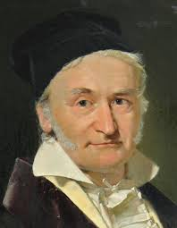
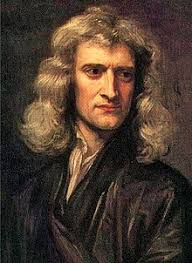
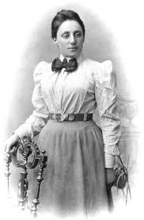
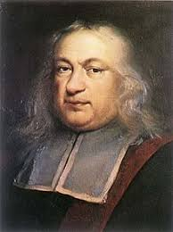

Our Team
Leonhard Euler

Leonhard Euler, (born April 15, 1707, Basel, Switzerland—died September 18, 1783, St. Petersburg, Russia), Swiss mathematician and physicist, one of the founders of pure mathematics. He not only made decisive and formative contributions to the subjects of geometry, calculus, mechanics, and number theory but also developed methods for solving problems in observational astronomy and demonstrated useful applications of mathematics in technology and public affairs.
Website: https://www.wikiwand.com/en/Leonhard_Euler
Email: euler@ncsu.edu
Carl Friedrich Gauss
Carl Friedrich Gauss, original name Johann Friedrich Carl Gauss, (born April 30, 1777, Brunswick [Germany]—died February 23, 1855, Göttingen, Hanover), German mathematician, generally regarded as one of the greatest mathematicians of all time for his contributions to number theory, geometry, probability theory, geodesy, planetary astronomy, the theory of functions, and potential theory (including electromagnetism).
Website: https://en.wikipedia.org/wiki/Carl_Friedrich_Gauss
Email: gauss@ncsu.edu
Issac Newton
Isaac Newton, in full Sir Isaac Newton, (born December 25, 1642 [January 4, 1643, New Style], Woolsthorpe, Lincolnshire, England—died March 20 [March 31], 1727, London), English physicist and mathematician, who was the culminating figure of the Scientific Revolution of the 17th century. In optics, his discovery of the composition of white light integrated the phenomena of colours into the science of light and laid the foundation for modern physical optics. In mechanics, his three laws of motion, the basic principles of modern physics, resulted in the formulation of the law of universal gravitation. In mathematics, he was the original discoverer of the infinitesimal calculus. Newton’s Philosophiae Naturalis Principia Mathematica (Mathematical Principles of Natural Philosophy, 1687) was one of the most important single works in the history of modern science.
Website: https://en.wikipedia.org/wiki/Isaac_Newton
Email: newton@ncsu.edu
Emmy Noether
Emmy Noether, in full Amalie Emmy Noether, (born March 23, 1882, Erlangen, Germany—died April 14, 1935, Bryn Mawr, Pennsylvania, U.S.), German mathematician whose innovations in higher algebra gained her recognition as the most creative abstract algebraist of modern times.
Website: https://en.wikipedia.org/wiki/Emmy_Noether
Email: noether@ncsu.edu
Pierre de Fermat
Pierre de Fermat, (born August 17, 1601, Beaumont-de-Lomagne, France—died January 12, 1665, Castres), French mathematician who is often called the founder of the modern theory of numbers. Together with René Descartes, Fermat was one of the two leading mathematicians of the first half of the 17th century. Independently of Descartes, Fermat discovered the fundamental principle of analytic geometry. His methods for finding tangents to curves and their maximum and minimum points led him to be regarded as the inventor of the differential calculus. Through his correspondence with Blaise Pascal he was a co-founder of the theory of probability.
Website: https://en.wikipedia.org/wiki/Pierre_de_Fermat
Email: fermat@ncsu.edu